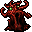
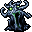
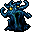
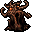
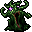
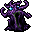

醜きもの Ugly thing
英語版 CrawlWiki の記事「Ugly thing」(0.34 向け、2026-09-19 版)の翻訳です。原文の著者は編集履歴をご覧ください。
| この表は自動では更新されない。 古い情報が含まれていることがある。 | |
|---|---|
| 醜きもの u  | |
| HP | 46-82 |
| HD | 12 |
| XP | 556 |
| 速度 | 10(移動: 90%) |
| AC | 4 |
| EV | 10 |
| 意志力 | 40 |
| 攻撃1 | 17(種類はランダム: 効果は色によって変わる)
|
| 耐性 | 色による |
| 弱点 | 銀 |
| 生息地 | 陸上 |
| 知能 | 動物並み |
| 使用 | 扉を開ける |
| 分類 | 生物 |
| 体格 | 中くらい |
| 種類 | 醜きもの、醜きもの |
| フラグ | 群れ 派生体を生成しない 温血 |

| 醜きものだ。伝説によれば、この変異した生き物は、ある魔術師の交配実験から生まれた異界の落とし子だという。おえっ。
「美は事物そのものにそなわる性質ではない。それはただ事物を眺める心の中にのみ存在し、心はそれぞれに異なる美を感じ取る。ある者が美を感じるところに、別の者は醜さを感じることさえある。そして各人は自分自身の感情に満足すべきであって、他人の感情を律しようなどと思うべきではない。」 |
基本情報
醜きものは、動きが速く、奇妙な形をした、見るだけで気分の悪くなるモンスターで、たいてい群れで現れる。ゲームの中盤に迷宮や一部の分岐、とくに宝物庫で出会う。体の色は虹のように何種類もあり、色ごとに属性が決まっている。攻撃の種類もまちまちで、噛みついてくるもの、頭突きしてくるもの、さらには触手でひっぱたいてくるものまでいる。
醜きものの種類
- u 赤: 火炎攻撃、rF+
- u

白: 冷気攻撃、rC+ - u

水色: 電撃攻撃、rElec+ - u

茶色: 酸攻撃、rAcid+ - u

緑色: 毒攻撃、rPois+ - u

紫色: 反魔法攻撃、意志力が80に上昇


醜きものは、ほかの醜きものや魔力汚染を受けたキャラクターに隣接していると、そのターンごとに色が変わることがある。放射の光や変化のワンド(こちらは必ず成功する)を使っても色が変わる。
小技
- 醜きものの群れは、戦っている最中に勝手にダメージと耐性の種類を変えてくる。属性ダメージに頼っているなら、攻撃する前に相手が何色なのかを確かめておくとよい。
- 毒を受けた醜きものは、緑色に変わっても毒を受けたままだ。悪臭の雲に突っ込んで混乱していた場合も、混乱は解けない。
- 通常速度のキャラクターよりも移動が速い。相手が視界の端にいて、反対方向に階段が見えているなら、たぶん逃げ切れる。ただし、距離を取りながら戦う引き撃ち(kiting)を長く続けることはできない。
- 知能は動物並みだが、扉を開けることはできる。
変更履歴
- 0.34より前は、紫色の醜きものは追加ダメージを与えるだけで、意志力は上がっていなかった。